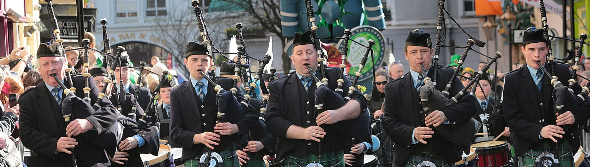
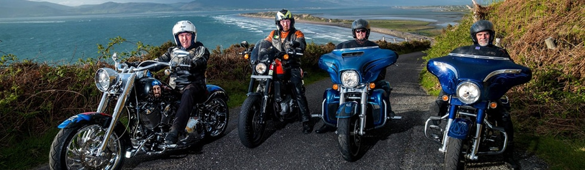
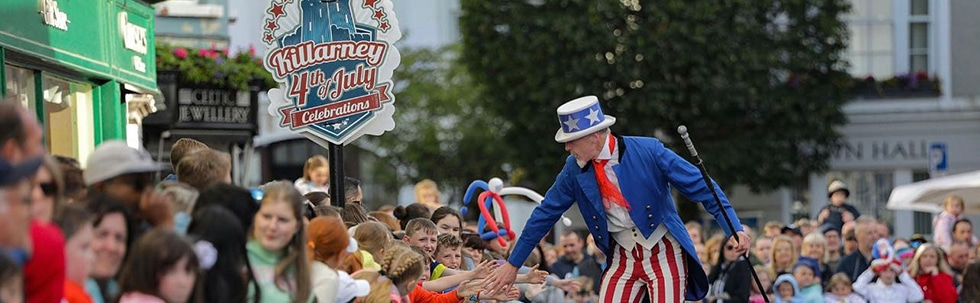
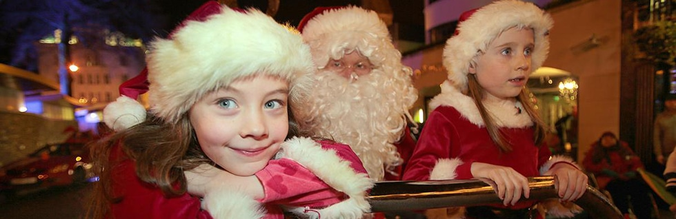

Killarney St. Patrick’s Day Festival
of 17 March 2023
St Patrick’s Festival Killarney is a celebration of our national day, culture and heritage. Killarney town will be buzzing with activity in the days and nights leading up to St Patrick’s Day in anticipation of the main event: the magnificent St Patrick’s Day Parade. Marvel at the spectacular floats, clap and cheer for the marching bands, welcome the town’s community groups and sports clubs, meet the Disney characters and join in the fun.

Ireland Bike Fest Killarney
2–5 June 2023
BikeFest brings the thunder to Killarney! Beginning at 10:00 each day, the Bike Village at The Gleneagle will host numerous motorcycling activities for riders and aspiring bikers and see local bands and international acts take to the three festival stages across Ireland’s June bank holiday weekend. Festival highlights include Wild Atlantic Way ride outs, the Harley-Davidson® Experiential Zone, free H-D demo rides, custom bike show, parade through Killarney town and a funfair, there are free events for all ages. With the best festival food and the infamous Harley® Bar it’s a weekend away like no other!

Killarney 4th of July Festival
4 July 2023
Killarney’s 4th of July Festival is a fabulous, themed event celebrating the town’s special centuries-old link with America. Start the celebrations in the fabulous Killarney House & Gardens with an outdoor concert and cinema on Monday 3rd July. The big day on Tuesday then features a spectacular USA themed parade, with marching bands, striking custom-built floats, baton-twirling cheerleaders, colourful movie characters, fun-loving cowboys and leather clad bikers followed by a musical Beat on the Street party. Enjoy the brass bands and exceptional musicians, pose with the Statue of Liberty and have your face painted.

Christmas in Killarney
of 25 December 2023
Experience the magic of Christmas in Killarney – one of the largest & most spectacular festive season celebrations in the country. With magical parades lighting up the town every Saturday leading up to Christmas. Santa and Mrs. Claus meeting boys & girls at their grotto in town. Post your letters to Santa at his special post box and enjoy a host of festive fun for all the family.
